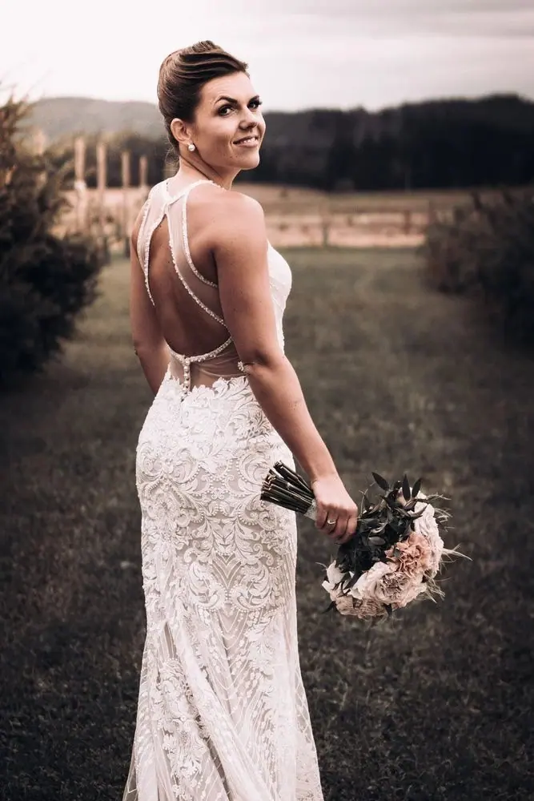
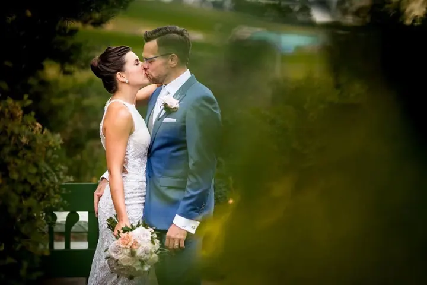

jedna
Svatební fotografie
Svatby jsou to hlavní, o co tu jde. Fotím celý den, až 12 hodin, od přípravy nevěsty až do večera. Všechny fotky upravím a do týdne vám je pošlu v dárkové krabičce s USB.


Jmenuji se Libor Vrška a fotím svatby. Rád za vámi přijedu kamkoli po republice a doprava je vždy v ceně. Fotím celý den od přípravy nevěsty až do večera a hotové fotky vám pošlu do týdne.
Více o mně
Co fotím
jedna
Svatby jsou to hlavní, o co tu jde. Fotím celý den, až 12 hodin, od přípravy nevěsty až do večera. Všechny fotky upravím a do týdne vám je pošlu v dárkové krabičce s USB.
Samoobslužná fotobudka, která fotky hned vytiskne, a k ní spousta cedulek a doplňků. Hosté si s ní užijí hodně zábavy. Zapůjčení stojí 3 990 Kč.
Retro telefon, do kterého vám hosté namluví přání nebo vtipný vzkaz. Nahrávky vám předám spolu se svatebními fotkami. Zapůjčení stojí 990 Kč.
Rád za vámi přijedu až na kraj světa


Za objektivem
První zrcadlovku jsem si pořídil v roce 2012. Fotil jsem s ní dovolenou a syna a pak dlouho ležela v šuplíku. Když jsem ji jednou oprášil, začal jsem cvakat a cvakat, až se z focení stala vášeň, které dávám skoro všechno.
Začínal jsem krajinou, zvířaty a jídlem, ale nakonec jsem zůstal u svateb a už to tak zůstane. Mám rád veselé a šťastné lidi, kteří chtějí mít na svůj velký den krásnou vzpomínku. Vím, že nikdo nechce čekat na fotky dva nebo tři měsíce, a proto je posílám do týdne. Na kvalitě přitom nešetřím.
Už nejsem žádný mladík, ale klidně mi tykejte. Na svatbě tykání stejně vždycky preferuji, protože si neumím představit, že bych při focení řekl: „Paní Nováková, postavte se mi sem a polibte pana Nováka.“ Můžete se u mě spolehnout na kamarádský přístup, pochopení a zkušenosti.
Libor
Napište mi datum svatby a já vám co nejdřív odpovím. Uzavřeme smlouvu, složíte vratnou zálohu 2 000 Kč a termín je váš.
Strávím s vámi až 12 hodin, obvykle od přípravy nevěsty kolem deváté do zhruba devíti večer. Přijedu kamkoli po republice a dopravu neplatíte.
Upravím všechny fotky, některé převedu do černobílé a párové navíc vyretušuji. Obvykle jich bývá 300 až 600, podle počtu hostů a průběhu svatby.
Fotky vám pošlu do týdne a k tomu dostanete dárkovou krabičku s USB. Když si objednáte záznamník, předám vám s fotkami i vzkazy od hostů.
Portfolio
Otázky
V roce 2026 stojí celodenní focení 16 990 Kč. Za svatbu ve všední den máte slevu 1 000 Kč. Cena platí ke dni podpisu smlouvy, takže pozdější zdražení se vás už netýká.
Ne, dopravu už máte v ceně. Rád poznávám nová místa a přijedu za vámi klidně na druhý konec republiky.
Obvykle 300 až 600 upravených fotek, podle počtu hostů a toho, jak svatba probíhá. Pošlu vám je do týdne. Pokud chcete všechny vyfocené snímky v základní úpravě, stojí to 5 000 Kč navíc.
Ano, pokud mi zajistíte nocleh na místě a další den nemám jinou svatbu. Focení delší než 12 hodin je možné po domluvě za 1 000 Kč za každou hodinu navíc.
Už ne. Nějakou dobu jsem fotil i točil zároveň, ale bylo to moc náročné, a proto se teď věnuji jen fotografii.